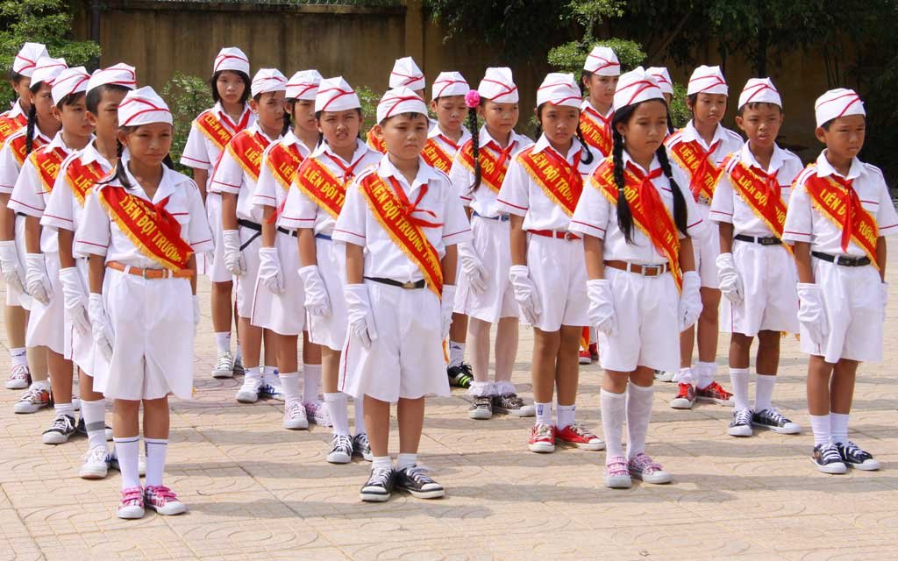
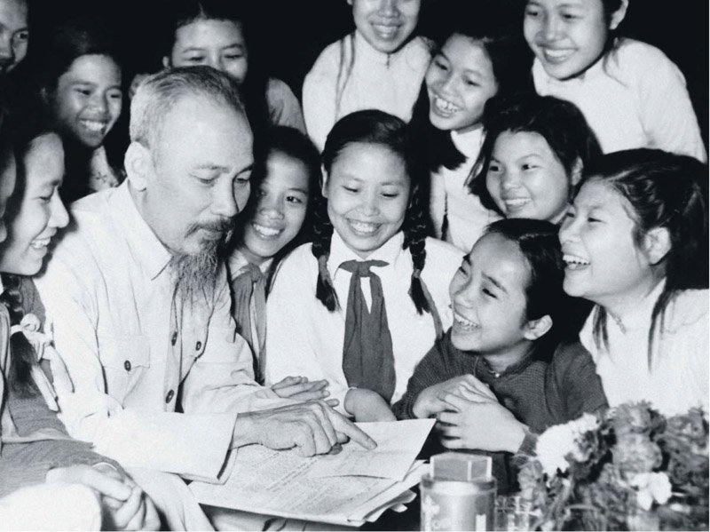
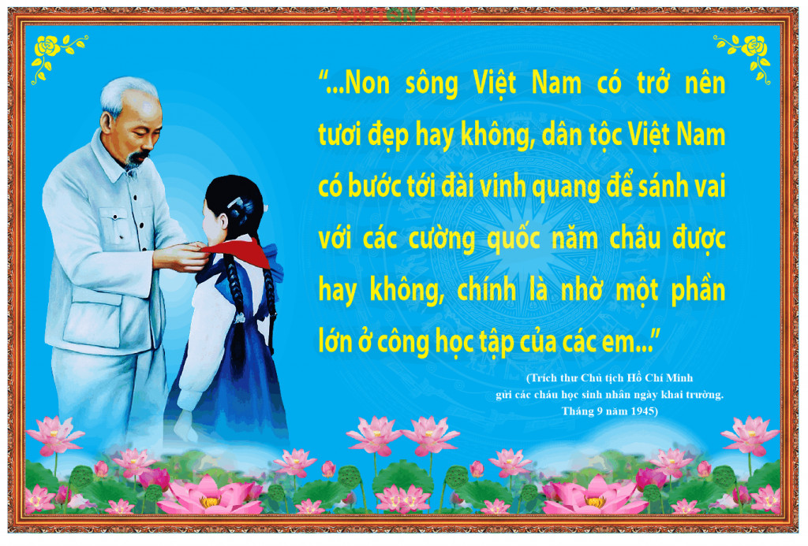

Mục đích của tổ chức Đội
Ngày 15/5/1941 tổ chức Đội chính thức được thành lập tại thôn Nà Mạ, xã Trường Hà, huyện Hà Quảng, tỉnh Cao Bằng với mục đích tập hợplực lượng thiếu nhi yêu nước, cùng với người lớn tham gia công cuộc đấu tranh giải phóng dân tộc. Đảng đã giao cho Đoàn thanh niên nhiệm vụ trực tiếp phụ trách Đội.
Trong giai đoạn 1941-1945, Đội đã tham gia các hoạt động tuyên truyền cách mạng, trinh sát, phát hiện Việt gian… góp phần vào sự thành công của Cách mạng tháng Tám.
Từ 1945-1954, các đội viên tham gia chống giặc đói, giặc dốt. Chỉ sau một năm đã tổ chức được 74.957 lớp học, giúp cho 2.500.000 người biết đọc. Lực lượng thiếu nhi còn tích cực tham gia kháng chiến , làm liên lạc trong các đội du kích, tình báo…như đội thiếu niên Hoàng Văn Thụ ở Hà Nội, đội thiếu niên tình báo Bát Sắt (Hải Phòng), đội thiếu niên du kích Đình Bảng (Bắc Ninh) … Giai đoạn 1954-1975, nhiều phong trào thiếu nhi ra đời phục vụ sự nghiệp xây dựng đất nước ở miền Bắc và công cuộc kháng chiến chống Mỹ ở miền Nam.
Tính chất của tổ chức Đội
1. Tính quần chúng Điều này được thể hiện qua Điều lệ Đội. Đội thiếu niên tiền phong (TNTP) Hồ Chí Minh là một tổ chức rộng rãi dành cho thiếu nhi Việt Nam từ 9 đến 14 tuổi, không phân biệt nam nữ, tôn giáo, dân tộc. Do các em làm chủ, tự quản dưới sự hướng dẫn của phụ trách Đội
2. Tính chính trị Đội là lực lượng dự bị của Đoàn, là nguồn bổ sung chủ yếu cho tổ chức Đoàn-cánh tay đắc lực của Đảng. Đội tổ chức hoạt động, giáo dục thiếu niên nhi đồng theo đường lối, quan điểm giáo dục của Đảng nhằm phục vụ sự nghiệp cách mạng của đất nước.
3. Tính giáo dục
Những hoạt động của Đội đều nhằm giáo dục đội viên theo 5 điều Bác Hồ dạy, theo chương trình rèn luyện đội viên. Đồng thời mọi quá trình hoạt động của Đội đều đặt dưới sự hướng dẫn mang tính sư phạm của phụ trách Đội và thầy cô giáo
Tổ chức Đội là người đại diện cho quyền lợi chính đáng của thiếu nhi. Đội tập hợp các em thông qua nhiều hoạt động phong phú, hấp dẫn và giáo dục cho các em trên nhiều lĩnh vực như: đạo đức, lối sống, văn hoá thẩm mỹ, nghệ thuật…
1. Tập hợp thiếu niên nhi đồng, phát huy mọi khả năng, sáng kiến của các em trong học tập, hoạt động, vui chơi bổ ích…
2. Xây dựng tổ chức Đội vững mạnh, giúp đội viên thành Đoàn viên TNCS, phụ trách công tác nhi đồng và dìu dắt nhi đồng trở thành đội viên.
3. Đoàn kết hữu nghị, tích cực tham gia các phong trào thiếu nhi quốc tế.